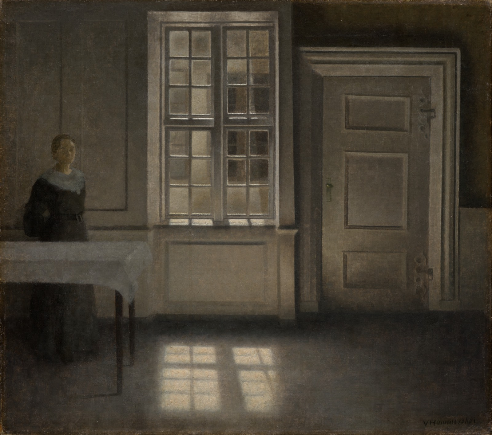

图：Vilhelm Hammershøi 约 1906 年的《Strandgade, Sunshine》——一个穿深色衣裙的女人独自站在桌边；窗关着，门也关着，一方窗形的光落在地板上。
接下来两个星期六，住在温哥华的人要投两次票。
10 月 17 日是市选，四年一轮；提前投票的最后一天是 10 月 13 日。市选还会另发一张选票，上面是两道没有法律约束力的公众咨询题。 10 月 24 日是省选，全省一起投。
两张票问的，其实是同一件事。
那张票上，一道问：赞不赞成本市加强法规，禁止在公共场所露天使用海洛因、冰毒、芬太尼、快克这类硬毒品。 另一道问：本市该不该正式请求省政府，把旧圣保罗医院（St. Paul's Hospital）的一部分，或者另找一处类似的地方，改建成一处封闭式管理的医疗设施——里面设急性期的自愿治疗床位，另有一百张以上的强制治疗床位；住进来的人，药物滥用和精神健康问题都很重，已经对自己或别人构成重大风险。
这两道题没有法律约束力。它们的用处是让选民表态，让这座城市的人说出自己觉得该怎么走。
两道题的字面，一道关于市政法规，一道关于向省政府要床位。但它们底下压着的，是这座城市二十多年来绕着走的那个问题：一个人流落到东区（Downtown Eastside）的街上，究竟是因为没有房子，还是因为毒品和成瘾。 第一道题，市政府自己就能做；第二道题要的床位，闸门在省里；10 月 24 日那张票，决定的是谁来管这道闸门。这也是这次省选的议题之一，主要政党各有主张。
这篇文章只想留下一把尺子。一套政策好不好，是看它的动机，还是看它的结果？一件难看的事，一个政府愿不愿意把它直说，还是宁愿换一个听起来体面些的词？这两个问题，对市政府和省政府一样适用。
拿尺子之前，得先知道量的是什么。上一次在这个问题上定方向的，是市议会，2001 年；那份方案开出四条路，二十五年里，真正走下去的几乎只有一条。 而那条路，要从四年前的一部纪录片，和它拍下的那条街说起。
2022 年上半年，卑诗省（British Columbia）有 1095 人死于毒品过量，平均每天六条命还不止。
影片把它拿来和疫情相比，用的是另一段时间：从 2020 年 1 月到 2021 年 7 月，全省大约 1800 人死于新冠；同一段时间里，死于非法毒品的，超过 3000 人，差不多是前者的两倍。一个以宜居闻名的地方，没有打仗，在一场席卷全球的疫情里，死于毒品的人，却比死于新冠的还多。
这场危机最扎眼的地方，在温哥华市中心的东边——一片叫"东区"的街区，北美最集中的露天毒品市场之一。帐篷、针管、倒在路边的人，是那里的日常。
导演 Aaron Gunn 在 2022 年拍了一部纪录片，叫《Vancouver is Dying》，"温哥华正在死去"。片子的前半部分沿着治安这条线，一路走到东区帐篷城的边上——这个系列的上一篇，讲的就是那一段；有兴趣可以去读。这一篇，带我们走进这个帐篷城。
帐篷之间，一个在街上住了二十七年的人说，这是他见过最糟的时候：身边每天都有人消失，他没了一百多个朋友，最近没了的一个，就在两天前。而这片帐篷底下，埋着一条很深的根，二十多年里一点点长起来的。这座城市一直不肯说出它的名字。
Marshall Smith 对这片街区再熟悉不过——他是从里面走出来的。他早年在卑诗省做了大约十年惩教官，干得顺心，一路往上走，进了 Gordon Campbell 的省政府，在负责奥运申办的厅长办公室里当幕僚长。差不多就在那时，他开始酗酒、成瘾，工作渐渐撑不住了。没过多久，他脱下西装、离开省议会，消失在温哥华的街头。那些年他跟警察打过不少交道；从一个过着寻常日子的市民，变成一个流落街头的成瘾者，这中间的坎，他说，极难迈过去。无家可归，成瘾，一过就是五年半。他记得自己住过一个海运集装箱，离他们拍片的地方，不过几个街区。把他从那里拉出来的，他说，是治疗和康复。
拍片时，他是阿尔伯塔省（Alberta）精神健康与成瘾事务副厅长办公室的幕僚长，在政府里替那些人说话——他们还困在他当年逃出来的地方。
这段来路，让他来回答一个问题，再合适不过。在卑诗省，乃至整个加拿大，说起街头的这些人，公共讨论里最常听到的，是"无家可归危机"。这个词本身就带着一个答案。人流落街头，是因为房子不够。那么，事情真是这样，还是另有原因？
Smith 的回答毫不含糊："九成，是毒品和成瘾。"人们住在东区的帐篷里，不是因为付不起房租；睡在高架桥底下，也不是因为租不到一套公寓。他们在那里，是因为海洛因、可卡因、芬太尼的瘾已经很深，还背着严重的精神健康问题。
"这里头是两件事缠在一起，"他说，"他们确实无家可归，但无家可归，是有原因的。所以我们得弄清楚，自己在解的，是不是那道对的题。"
温哥华房价高到离谱，你我大概都默认过：人睡到街上，归根到底是房子太贵。而把这一切归到"住房不足"上，本身有一种体面的克制：它拒绝去评判一个落魄的人。谁都不愿意站在一个睡帐篷的人面前，居高临下地说他"活该"。
这份克制没有错。错的是，它让这座城市一直在解一道错的题。
房子，其实大体是有的。政府给街头的人找住处，做得并不差：过去四年，在温哥华建起了 1400 套永久性的支持性住房，光 2022 年就添了 350 套，楼里给成瘾的住户配着各种支持服务。可帐篷城里很多人不肯搬进去——那些房子带着规矩，他们宁可待在街上。
可住进了房子，不等于安全。警方 2017 到 2021 年间收集的数据显示，这座城市里疑似过量致死的案例，有一半，发生在单间出租屋（SRO）和其他支持性住房里——恰恰是那些本该把人接住的房间。
Cody Hall 就在这样的房间里住过。他在一家治疗机构里熬了六十天，干干净净地出来，被安置进一间政府出资的 SRO。工作人员领他上楼，路过一间办公室，顺手就要塞给他冰毒烟斗、快克烟斗和针管。他没要，进了自己的房间。
大约十分钟后，有人敲门。是住对门的人，来送他一份免费的海洛因，算是"样品"。
"我当天晚上就复吸了。"
他在那里住了差不多一年。对门是毒贩，走廊那头也是。"我当时就想，"他说，"我迟早会死在这种处境里。"
Smith 在这座城的街上熬过那五年半。这样一个房间对成瘾的人意味着什么，他说得很冷：
"作为一个成瘾的人，你能对我做的最糟的事，就是给我四堵墙，和一扇我能锁上的门。你多半会在某一天，发现我死在客厅的地板上。"
原因，他说，是七成的过量致死，都发生在家里、独自一人的时候。照这个数字，把重度成瘾的人匆匆安置进旅馆房间和公寓，关上门，藏起来，是非常危险的。
这些年，北美不少城市信奉一种思路，叫"住房优先"（Housing First）：先让街头的人住进一个有门有锁的地方，戒不戒、治不治，往后再说。Smith 那句"四堵墙"，反对的就是这个思路。
面对成瘾这条根，政府看起来并没有打算去动它。它把力气和钱，几乎全押在了减害（harm reduction）上。
这条路的起点，是 2001 年。那一年，温哥华市议会通过了一份策略文件，叫《A Framework for Action》，副题是"应对温哥华毒品问题的四支柱方案"。四根支柱是：预防、治疗、执法、减害。
减害的意思，是先不急着让人戒，先把用毒带来的伤害降下来。发干净的针管，是为了挡住艾滋病和肝炎顺着共用的针头传开；纳洛酮（naloxone）能在几分钟里，把一个过量的人从死亡边上拉回来。
可实际做下来，预防、治疗、执法这三根，几乎没怎么动。真正走到台前的，是减害，和那"减少污名"的口号——尤其是 2003 年 Insite 开张以后。Insite 是北美第一个受监督的毒品注射点：成瘾的人带着自己的毒品进去，在工作人员看护下注射，一旦过量，旁边就有人施救。
四根支柱当年搭起来，是因为温哥华一年大约有 150 人死于过量；那些年，全省一年在三百人上下。这两个数字，在当年已经让人受不了了。等到拍片 2022 年前后，这个省一年死于过量的人，动辄两千以上。
有人把当年那个一百五十和今天的两千摆到了一处。"你看看这个省的过量死亡涨得有多快，"他说，"我真不知道，怎么还能得出'这套政策执行得很成功'的结论。"
他问的，不是谁害死了谁。他问的是：一套政策走到这一步，还凭什么叫成功。
最后他指出了现在真正的麻烦：如今这件事已经裹进了一团"文化的、哲学的、意识形态的瘴气"里，"你已经没法真正按它的效果去评判它了"。于是能做的，最多就是在同一个意识形态的结论上，一次次加码。说穿了就是：更少的污名，更多的毒品。
一项政策好不好，本该看它结出了什么果子。可一旦它和一种文化、一种信念、一种立场缠在一起，结果就不再是量它的那把尺子了。数字再难看，能得出的结论也只剩一个：做得还不够，要更多。
也有人说，政策评判不看结果，还有一层更具体的缘故：推进这些政策的，是一小圈研究者。项目是他们在跑，而评估这些项目的研究，往往也由他们来写，或者至少由他们参与、审阅。这个结果就可想而知。
一根支柱，最后挤掉了其余三根，而自己长成了庞然大物。
这庞然大物越长越大，底下是一个信念。成瘾者面对的最大问题，是污名——被人看不起，被当成道德上的败类。
反对者里，有一位觉得这是把事情整个想反了。"你本来就应该给那些毁坏身心的行为贴上污名，"他说。而且这个社会，明明知道怎么做。
他举的是酒驾。老一辈人跟他讲过，他们年轻那会儿，喝了酒开车，被当成有点滑稽、没什么大不了的事；到了他这一代，社会下了狠劲，搞了一场声势很大的宣传，告诉你酒后开车又坏、又危险、又可耻，做了就该觉得羞愧，朋友要做，你得拦着。这套路数，中文读者并不陌生——醉驾就是一个例子。反过来呢？刻意把一种行为的污名抹去，是不是也改得动人？
同一个社会，他说，花了三十年教孩子别染上烟瘾，转过身来，却说硬毒品没关系。所以关于污名，真正该问的是：哪一部分污名是有毒的，哪一部分，只是最普通的社会契约——一个共同体给某些行为划下的界线。
卑诗省政府的想法，恰好在另一头：羞耻常常让人不敢伸手求救，所以要把这份羞耻拿掉。为此迈出的最显眼的一步，是除罪化（decriminalization）：由新民主党（NDP）执政的省政府，在渥太华联邦政府的支持下宣布，包括海洛因、芬太尼、冰毒、可卡因在内，几乎所有硬毒品的个人持有，都不再按刑事罪处理。除罪化不是合法化：贩毒照样是罪，只是身上带着少量自用的毒品，不再被当成刑事犯罪来追究。
在批评者眼里，这一步几乎纯是象征。一位受访者说："1985 年以后，我们就再没因为单纯持有海洛因起诉过人。"
批评者说，这一步百分之百出于意识形态：本来就没人因为持有被关、被抓，现在再象征性地宣布一次"不执行"，却被当作一场胜利——只因为在那套想法里，连"理论上还有可能被抓"这件事，都成了问题的一部分。
可在他们看来，这一步也不是什么都没做。把持有除罪化，几乎唯一的作用，是让成瘾者手里拿着毒品这件事变得合法；而这，正好替下一步扫清了路：由政府直接把药递到这些人手里。上一轮减害，发的是干净的针管；这一轮，要发的是毒品本身，而且免费。
这套做法有个名字，叫"安全供应"（safe supply）。按它自己的道理，街头买来的毒品，说不定掺了更要命的东西，比如芬太尼——一种人工合成的阿片类药物，药效是海洛因的几十倍，极小的一点就能要命；由政府提供来路清楚、剂量已知的药，成瘾的人就不必再去黑市上碰运气，过量死亡也就能少一些。
可这笔账，反对的人算得完全不同。
反对者先驳的，是这个名字本身。"根本不存在什么安全供应，"一位反对者说，"'安全供应'是个营销用语。把阿片类成批地发给一群人，管控能少就少，这里头没有一点安全可言。"反对者说得更重：这是把一种病延续下去，是国家出钱养着的成瘾。
还有人把这件事的起点，一直往前推到奥施康定（OxyContin）。"我们落到今天这摊烂事里，是从奥施康定那场危机开始的，"他说，"那时候药厂把这种药大面积地铺进了社区。"那也是一个合法的、受监管的阿片类市场，可它并不安全：药没有留在该用它的人手里，公共卫生也没有因此得益。今天为安全供应说话的人，讲的还是那几句——合法受监管的供应是安全的，公共卫生会得益，药只会照医嘱吃，大家别再大惊小怪，阿片类是好东西。他并不是说今天这些倡导团体和制药业有什么瓜葛。他的意思恰恰是：有没有瓜葛，都"无关紧要，这会非常危险"。
何况，这些药未必都留在该留的人手里。说起它们的去向，有位反对者讲得很细：像 Dilaudid、Dexedrine 这类安全供应发的药，有人只在去医生那里验尿之前吃一粒，好让尿检过关，剩下的都拿到黑市上卖，连附近的大学生、中学生都从毒贩手里买；毒贩一加元一粒收进来，本地转手卖五到十加元，运到别的省份，能卖到二三十甚至四十加元。
把这整套做法叫作"一场拿成千上万人做的人体实验"的，是一位父亲。温哥华在带头试一些干预手段，几乎没有证据支撑，别处也从没试过；在他看来，这不叫进步，叫不人道，是把人命当成实验室里的老鼠。他说，他总会把这件事放到自己孩子身上去想：
"如果有一天，我的孩子——但愿不会——染上了毒瘾，流落到市中心的街头，我最不想看到的，就是有人再给他们毒品，看着他们过量，给一支纳洛酮；再给毒品，再给纳洛酮，直到有一天，他们终于'成功'地过量死掉。"
推动这套做法的人，在自己心里，占住了道德和同情的高地。有人问一位反对者，这算不算同情。他答得干脆：
"我当然不这么认为。"
一个人活在某种"活着的死亡"里，像行尸走肉一样。面对这样的人，看着他说：这就是你这辈子能有的最好样子了，我们这个社会，对你没有更高的指望——他说，这不是同情。
这种话背后，是一套居高临下的意识形态：它认定，这就是你的命；你改变不了，因为你做不了自己的主；毒瘾跟选择无关，甚至，毒瘾本身也算不上什么坏事。
这，是同情吗？
前面说的，都是政策。可政策落到一个人身上，就是另一副样子了。
一位正在康复的人说，医生曾经告诉他：这辈子只有一条路——一直接受阿片类替代疗法，才能过上一点正常人的日子。这句话听在他耳朵里，像一扇门在身后关上。
"那句话听下来，几乎把人压垮了，"他说，"因为你会失掉希望，你会觉得自己这辈子都走不出来了。那不是真的……我自己，就是反证。"
Gunn 在旁白里说，卑诗省想"用药把这场成瘾危机压下去，否认成千上万人还有康复的可能"，而世界上很多地方，并不走这条路。
最常被人拿出来说的，是欧洲小国葡萄牙。葡萄牙在 2001 年，也把个人持有毒品除罪化了。有人拿葡萄牙和卑诗省作对照。在他看来，外界对它最大的误解，是以为它放任不管，等于把毒品合法化了。"实际上，他们搭起了一套机制，把人往帮助那边送，也要人担起一点责任。"
在葡萄牙，他说，你带着少量毒品被发现，不会有人冲你点点头，就放你走；你会被带到一个小组面前，由他们评估你的用药情况，一个人一个人地看：你是该去治疗，还是先给个警告。这和卑诗省把所有毒品一律除罪化，是两回事。
"葡萄牙其实是一个非常保守的社会，"他说，"奉行的是一套非常强势的干预政策。"
卑诗省政府对别处的这些做法兴致不高，Gunn 说，但这没拦住民间的非营利机构自己站出来，补上这个缺口。他去见了 Last Door Recovery Society 的创办人 David Pavlus。旁白介绍，这家机构帮男性走出成瘾——包括阿片类成瘾——已经三十五年以上。
Pavlus 说的康复，是另一回事。"我们不把人看成疯子，"他说，"但我们确实把他们看作正在恢复神智的人。"让他一直做下去的，是这些画面：
"看到一家人重新团聚，看到爱、感恩和彼此扶持，看到那些男人身边带着自己的孩子——那是金子。我当初做这件事，就是为了这个。"
他说，这比人们想象的容易，也用不了太久。按他的说法，几个星期下来，人就觉得好些了，能吃，能睡，攒下一点干净的日子，神智慢慢回来，"脑子清楚了"。
在很多项目里，他说，人从进去到出来，一直在用药，那些药被当成寻常的药物。"你给一个不疼的人吃止痛药，你觉得会发生什么？"他拿减害跟酒驾作比："如果真要这样'减害'，是不是也该教人怎么醉着开车？这听起来疯不疯？这就是疯。"
Gunn 的旁白这样讲 Last Door 和安全供应、减害的不同：它要建起一个共同体，扶着成瘾的人走到"彻底而持久的戒断"，让这种病进入缓解期。
戒断这条路，常会碰上一个反驳。一位戒毒快满十六年的人，把它原样复述出来，又顶了回去："他们说，戒断会让你有过量的危险。可用毒，才让你有过量的危险。"
他说，媒体上听到的，全是除罪化、安全供应；没人去写一个人是怎么好起来的。"我快满十六年没碰了。我有我自己的故事。所以，当有人说康复没用——政客这么说，医生这么说，媒体上的人也这么说，说那是做不到的——那是谎话。"
接着，镜头前是几个戒了毒的人，一个接一个，话都不长。十八岁，已经快满十八个月没碰过毒品。"我把孩子要回来了，有了一份有意义的工作，有了一个家。减害给过我这些吗？我这辈子哪一段时间，它给过我？它给过我什么有意义的东西吗？""我戒得还算容易。我想，是因为我从没被带进减害那一套。说实话，要是早知道有它，我不知道自己现在还能不能干干净净。"
Marshall Smith 说，这座城里的每一个街区，他都住过。说起自己是怎么出来的，他只用了几句话：
"我在街上的时候，帮到我的，是去接受治疗。我走进了康复，我的日子因为这个好了起来。这就是我的故事。"
这部片子拍于 2022 年。和上一篇一样，得把它之后的事交代清楚。
片子批评最狠的两样，除罪化和安全供应，后来都有了变化。动手的，是仍由 NDP 执政的省政府，只是省长已经从提出除罪化申请的 John Horgan，换成了 David Eby。2024 年，省政府把在公共场所吸毒重新入罪。
处方替代药物，也就是人们说的"安全供应"，从 2025 年 2 月起分批改为必须在医护人员见证下服用，到 2025 年 12 月 30 日覆盖所有病人；省政府给出的理由，是确保这些药落到需要它的人手里，不被转卖出去。主管这件事的厅长同时坚持，这些药能救命，省政府并没有否定安全供应本身。2026 年 1 月，为期三年的除罪化试点到期，没有再续。
死亡人数也变了。卑诗省死于非法毒品的人数，2023 年是 2511 人，创下纪录，2024 年是 2315 人，2025 年降到 1826 人；而同一段时间里，整个北美的过量死亡都在往下走——美国 2024 年下降约 27%，2025 年又降了将近 14%，加拿大全国的阿片类中毒死亡，2024 年下降约 17%。
先前那一轮猛涨，很大一块，是被芬太尼污染的街头毒品推上去的。后来为什么会降，至今还有争论：加拿大公共卫生署（Public Health Agency of Canada）评估过全国这次下降，认为没有哪一个因素能单独解释它，几个因素似乎是一起起了作用。这些数字，判不了这场政策之争——哪一边都判不了。
只是，把今天的数字放回当年，仍然不是一个数量级上的事。1998 年，四支柱方案还没出台，那是上世纪九十年代全省过量死亡最多的一年，417 人；就算 2025 年降到了 1826 人，也还是那一年的四倍还多。
这些事，四年之后并没有落定。开头那两道咨询题，是 2026 年 8 月温哥华市议会投票决定，随 10 月 17 日市选另发一张选票的。
这两道题由市长沈观健（Ken Sim）和他所在的 ABC 党团提出；他们给出的理由是，结果若是赞成，市议会就拿到了一份明确的民意授权。反对的议员不这么看：有人称它是一次选举作秀。 而这两道题问到的地方，这个系列都讨论过。一边是把硬毒品的使用赶出公共空间，一边是把钱和床位投到治疗和康复上，而不是投到用药和供应上。前一件，片子在前半部分聊过，也就是上一篇的那一段；后一件，是这一篇从头到尾在讲的。
片子争过的事，如今摆到了这座城市自己的选票上；答案，由住在这里的人给。
四年前，片子没有停在惨状上。最后几句旁白，Gunn 是这样说的：
"对许多成瘾者来说，康复似乎毫无希望。对许多住在帐篷城里的无家可归者来说，一份安稳的正常生活，似乎远得够不着。对温哥华的居民来说，这座城市的样子，包括那些随机的暴力袭击，似乎已经坏到收拾不回来了。但这些，都是假象。这不正常。"
资料与查证
这篇文章以纪录片《Vancouver is Dying》（导演 Aaron Gunn，2022）的后半部分为主线，是这个系列的第二篇，也是最后一篇。文中受访者的话，以及片子给出的数字——九成源于成瘾、四年 1400 套支持性住房、一半疑似过量死亡发生在单间出租屋与支持性住房、七成过量死于家中独处、2022 年上半年 1095 人、疫情期间约 1800 人对 3000 余人、一年约 150 人到两千以上的对照、处方药的转卖价格——都是影片自己的呈现。它是一部有立场的作品，本文照实转述，不代表这些说法已经独立证实，也请读者自行分辨。片中多数受访者，本文未能核实身份，只按他们说的话来称呼。原片：https://www.youtube.com/watch?v=PT8OU8Yhs_s
至于影片之外的事实，以及它之后这几年的变化，本文另做了独立核对，主要依据以下第三方与官方来源：
关于 Marshall Smith：拍片之后，他从 2022 年起任阿尔伯塔省省长 Danielle Smith 的幕僚长，主导了该省的成瘾应对策略；2024 年 10 月卸任，从公职退休。
封面图：Vilhelm Hammershøi, Strandgade, Sunshine (c. 1906). Cleveland Museum of Art, CC0. https://clevelandart.org/art/2023.38